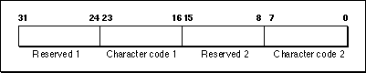

KeyTranslate
You can use theKeyTranslatefunction to convert a virtual key code to a character code based on a'KCHR'resource. TheKeyTranslatefunction is also available as theKeyTransfunction.FUNCTION KeyTranslate (transData: Ptr; keycode: Integer; VAR state: LongInt): LongInt;
transData- A pointer to the '
KCHR' resource that you want theKeyTranslatefunction to use when converting the key code to a character code.keycode- A 16-bit value that your application should set so that bits 0-6 contain the virtual key code and bit 7 contains either 1 to indicate an up stroke or 0 to indicate a down stroke of the key. Bits 8-15 have the same interpretation as the high byte of the
modifiersfield of the event record and should be set according to the needs of your application.state- A value that your application should set to 0 the first time it calls
KeyTranslateor any time your application callsKeyTranslatewith a different'KCHR'resource. Thereafter, your application should pass the same value for thestateparameter asKeyTranslatereturned in the previous call.DESCRIPTION
TheKeyTranslatefunction returns a 32-bit value that gives the character code for the virtual key code specified by thekeycodeparameter. Figure 2-17 shows the structure of the 32-bit number thatKeyTranslatereturns.Figure 2-17 Structure of the
KeyTranslatefunction result
The
KeyTranslatefunction returns the values that correspond to one or possibly two characters that are generated by the specified virtual key code. For example, a given virtual key code might correspond to an alphabetic character with a separate accent character. For example, when the user presses Option-E followed by N, you can map this through theKeyTranslatefunction using the U.S.'KCHR'resource to produce �n, whichKeyTranslatereturns as two characters in the bytes labeled Character code 1 and Character code 2. IfKeyTranslatereturns only one character code, it is always in the byte labeled Character code 2. However, your application should always check both bytes labeled Character code 1 and Character code 2 in Figure 2-17 for possible values that map to the virtual key code.SEE ALSO
For additional information on the'KCHR'resource and theKeyTranslatefunction, see Inside Macintosh: Text.